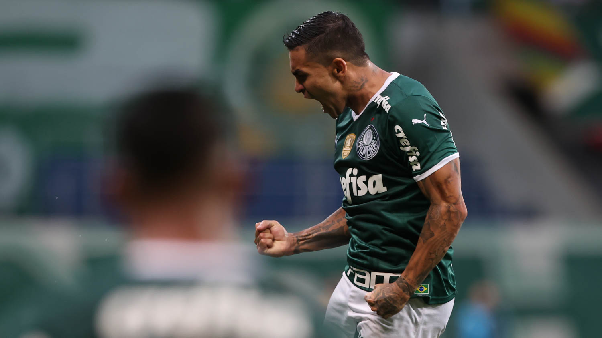
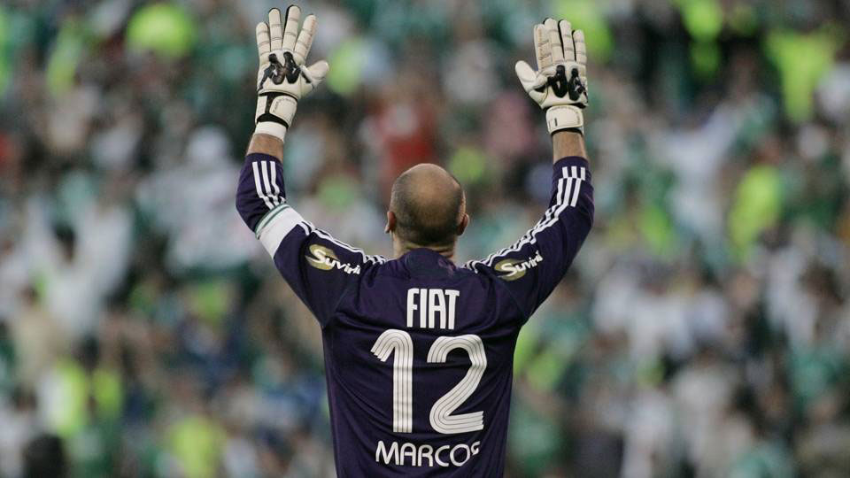
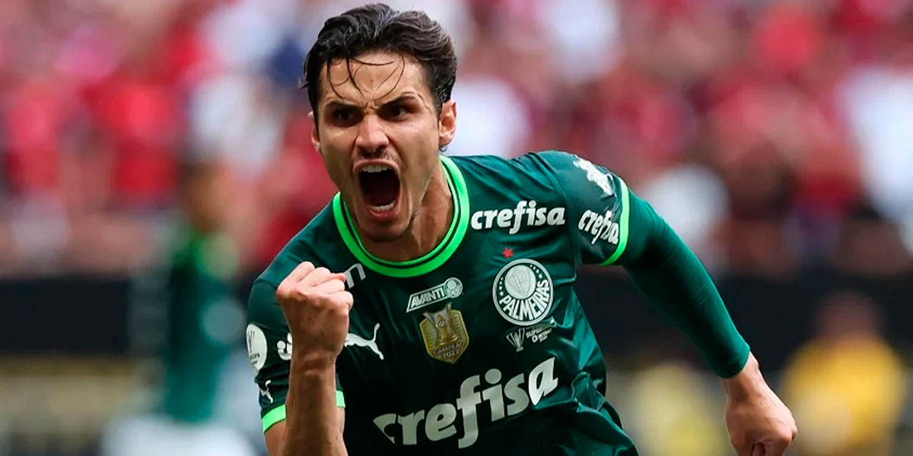
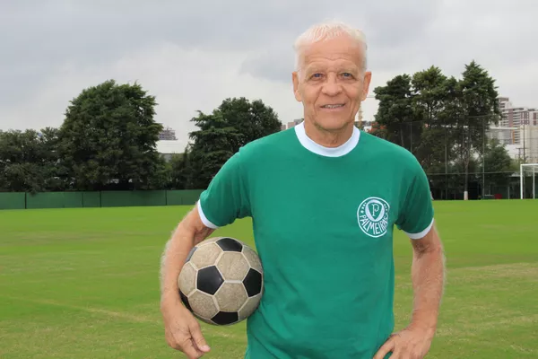
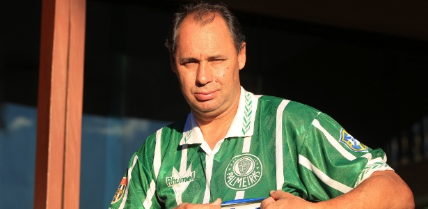
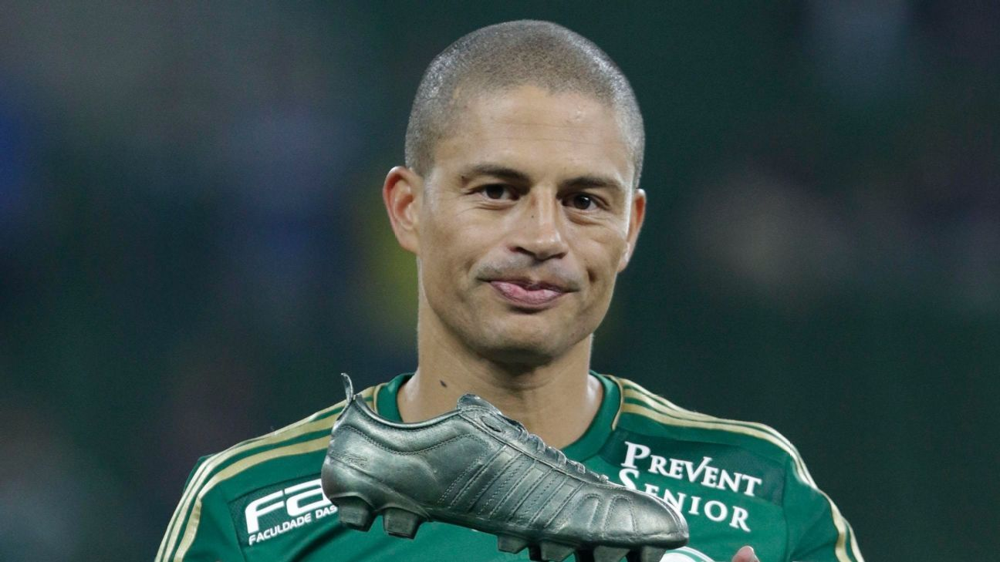
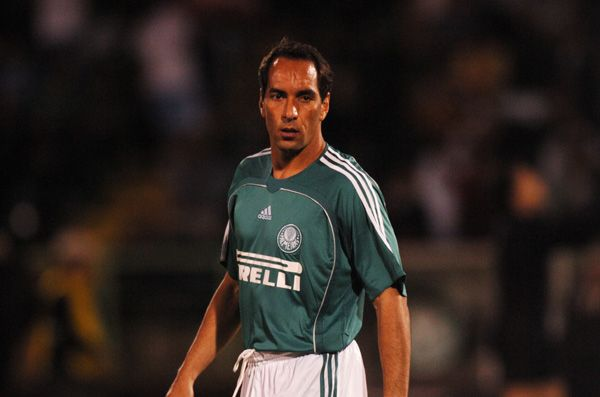
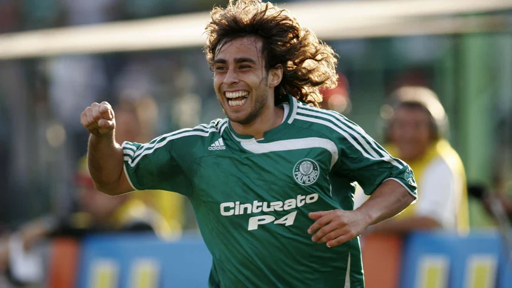

A Sociedade Esportiva Palmeiras, por ser um clube gigantesco com uma história magnífica,
conta com diversos jogadores importantes que são considerados ídolos para a torcida Alviverde. Dentre diversos
nomes, separamos os mais importantes, segundo a opinião popular, para apresentar aqui no blog.

DUDU
Dudu, ou Eduardo Pereira Rodrigues, é considerado um ídolo na Sociedade Esportiva
Palmeiras devido à sua destacada trajetória no clube. Desde sua chegada em 2015, Dudu não apenas demonstrou
habilidades excepcionais em campo, contribuindo significativamente para as conquistas do Palmeiras, mas
também se destacou como um líder nato dentro do elenco. Sua entrega incansável, comprometimento com a camisa
alviverde e a conexão emocional estabelecida com a torcida consolidaram sua posição como uma figura
emblemática na história recente do clube, deixando uma marca indelével no coração dos torcedores
palmeirenses.

MARCOS
São Marcos, ou Marcos Roberto Silveira Reis, é venerado como um ídolo incontestável na
Sociedade Esportiva Palmeiras devido a uma carreira extraordinária que inclui conquistas memoráveis,
notáveis defesas e uma conexão íntima com a torcida. Sua participação decisiva na conquista da Taça
Libertadores e da Copa Rio em 1999, aliada à sua personalidade carismática e amor declarado pelo clube,
solidificou sua posição como um dos maiores goleiros da história palmeirense. Além de suas proezas em campo,
a humildade e o espírito competitivo de São Marcos deixaram um legado duradouro, transformando-o em uma
lenda cujo impacto transcendeu o esporte, moldando a identidade e a paixão da comunidade alviverde.

RAPHAEL VEIGA
Raphael Veiga é visto como um ídolo no Palmeiras, destacando-se por suas habilidades
técnicas, consistência em campo e capacidade de ser decisivo em momentos cruciais. Sua versatilidade e
contribuições para o sucesso do time podem ter desempenhado um papel significativo na sua apreciação pelos
torcedores. Além do desempenho esportivo, fatores como identificação com a torcida e comportamento exemplar
também podem ter contribuído para a sua consideração como uma figura querida no clube.

ADEMIR DA GUIA
Ademir da Guia, carinhosamente conhecido como "Divino", é um ídolo incontestável no
Palmeiras devido às suas habilidades excepcionais como meio-campista, liderança destacada e longa dedicação
ao clube. Sua elegância em campo, visão de jogo notável e contribuições cruciais para as conquistas do
Palmeiras nas décadas de 1960 e 1970 solidificaram sua posição como uma das maiores figuras na história do
futebol brasileiro. Além de suas proezas esportivas, Ademir da Guia é admirado por sua lealdade, postura
respeitosa e influência positiva, estabelecendo um vínculo duradouro com a torcida alviverde que o torna um
ícone insubstituível no coração dos palmeirenses.

EVAIR
Evair, conhecido por suas contribuições inestimáveis ao Palmeiras, é reverenciado como um
ídolo devido à sua notável trajetória nas décadas de 1990 e 2000. O atacante foi peça-chave nas conquistas
da Copa do Brasil em 1998 e da Taça Rio-São Paulo em 2000, destacando-se por sua habilidade goleadora,
inteligência tática e presença em momentos cruciais. Além de seu sucesso em campo, a identificação de Evair
com a torcida vai além do futebol, sendo moldada por sua atitude profissional, caráter exemplar e respeito
pela camisa alviverde. Seu legado é uma celebração de dedicação, paixão e conquistas que o consagraram como
um ídolo eterno no coração da torcida palmeirense.

ALEX
Alex Mineiro é reverenciado como um ídolo no Palmeiras devido às suas notáveis
contribuições como atacante durante sua passagem pelo clube nos anos 2000. Sua habilidade em marcar gols
importantes, especialmente na campanha vitoriosa da Copa do Brasil em 2012, solidificou sua posição como uma
figura querida entre os torcedores alviverdes. Além do desempenho esportivo, a dedicação em campo e a
capacidade de se destacar em momentos cruciais contribuíram para a idolatria de Alex Mineiro, tornando-o uma
parte inseparável da história e do carinho da torcida palmeirense.

EDMUNDO
Edmundo é celebrado como ídolo no Palmeiras devido à sua destacada carreira no clube,
notadamente pelas conquistas no Campeonato Paulista de 1996 e na Copa do Brasil de 1998. Além de suas
contribuições em campo, a personalidade carismática e o estilo de jogo aguerrido de Edmundo cativaram os
torcedores, estabelecendo uma forte conexão emocional. Sua identificação com a camisa alviverde, a entrega
em campo e a representação dos valores da torcida contribuíram para a consolidação de Edmundo como uma
figura emblemática e ídolo eterno na história do Palmeiras.

VALDIVIA
Jorge Valdivia, conhecido como "El Mago", é idolatrado no Palmeiras devido à sua
extraordinária habilidade técnica e às contribuições marcantes durante suas passagens pelo clube,
destacando-se nas conquistas da Copa do Brasil em 2012 e do Campeonato Paulista em 2008. Além de seu talento
em campo, Valdivia conquistou a admiração dos torcedores pela personalidade carismática, seu carinho pela
camisa alviverde e sua capacidade de ser decisivo em momentos cruciais. Sua conexão genuína com a torcida e
os momentos memoráveis proporcionados fizeram dele um ídolo inesquecível na história do Palmeiras.